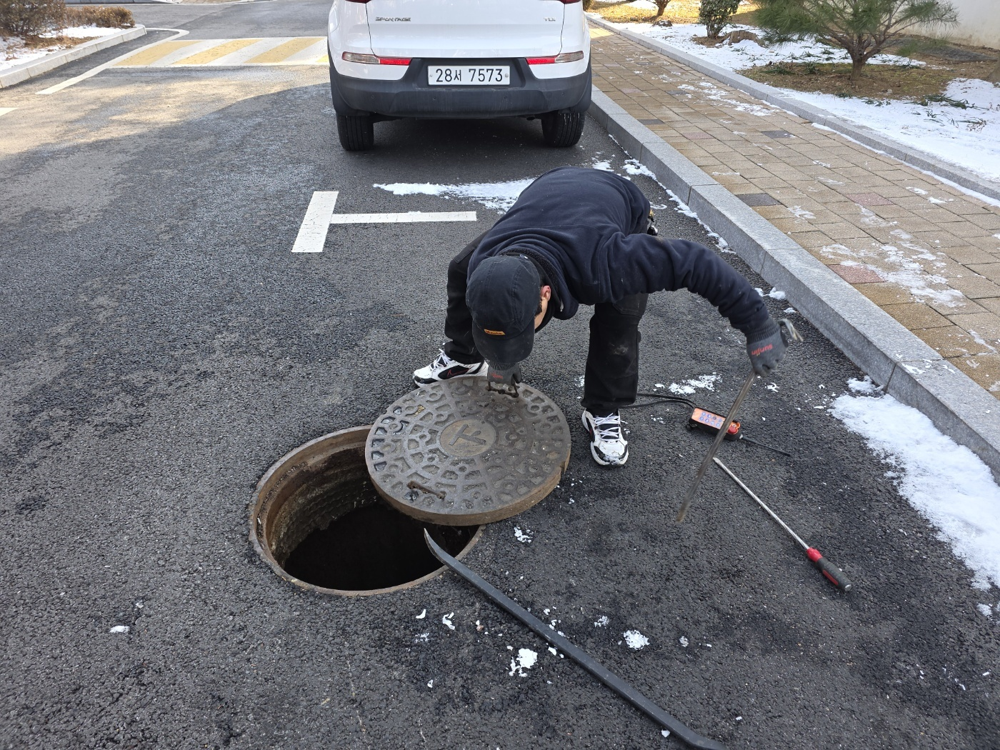
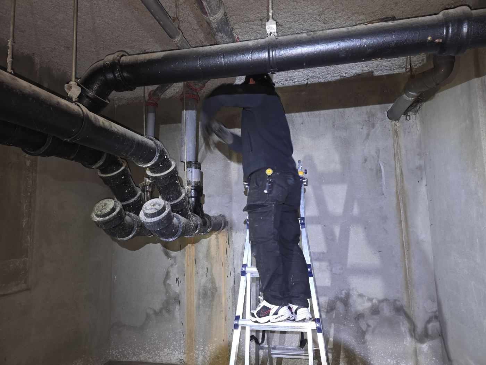
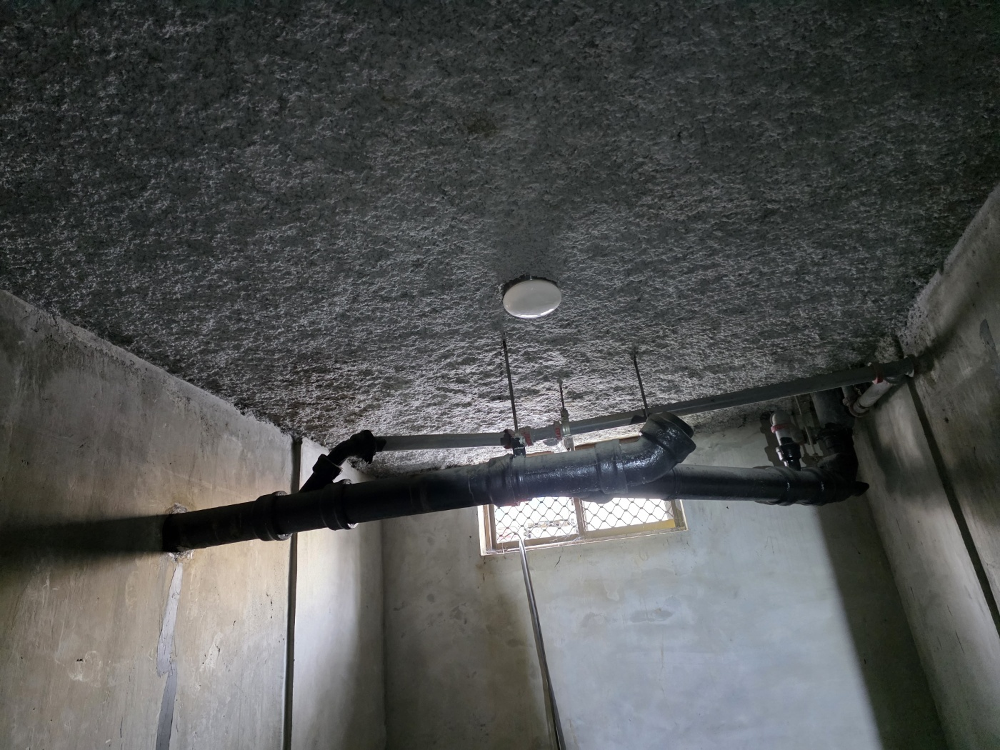
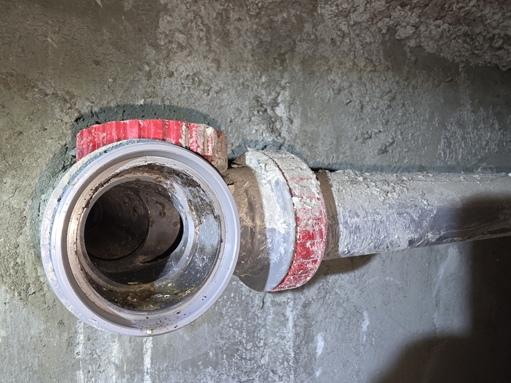

안녕하세요.. 고고고 설비입니다.. 오늘은 평택시 소사동에 있는 아파트에서 하수구막힘 신고를 받고 다녀온 현장입니다.
주차장 쪽 맨홀부터 열어서 배관 라인을 확인했는데, 원인을 정확히 찾기 위해 지하 기계실로 이동해 배관 상태를 더 살펴보기로 했습니다.
사다리를 놓고 올라가서 천장에 지나가는 배관 연결부 상태를 하나씩 확인했습니다.

천장을 따라 이어지는 배관 라인을 끝까지 따라가며 막힘이 의심되는 구간을 좁혀나갔습니다.

배관 중간에 있는 청소구를 열어보니 안쪽에 찌든 이물질이 묻어있는 게 확인됐습니다. 이 지점부터 고압세척을 진행하기로 했어요.

고압세척 호스를 청소구에 연결해서 배관 안쪽을 반복해서 세척했습니다.
작업을 마치고 물을 내려서 배관이 정상적으로 뚫린 걸 확인하고 마무리했습니다. 아파트 지하 배관은 여러 세대의 하수가 한곳으로 모이는 만큼, 정기적인 점검이 막힘 예방에 도움이 됩니다.
고고고 설비는 주택, 아파트, 원룸, 상가, 공장의 생활 하수 오수 배관을 관리해 주는 업체입니다. 고고고 설비에 전화 주시면 친절상담 정확한 진단 확실한 해결로 보답해 드리겠습니다!!